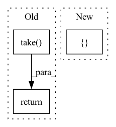

Pattern ID :4880

Before Change
factors = [1.0] + decay_factors
index = jnp.sum(boundaries[1:] < step)
if index + 1 == len(factors):
return jnp.take(factors, index)
else:
m = (jnp.take(factors, index + 1) - jnp.take(factors, index)) / (
jnp.take(boundaries, index + 1) - jnp.take(boundaries, index))
interpolated_factor = (
After Change
Returns:
Scaling factor applied to the learning rate on the given step.
boundaries = jnp.array([0] + decay_events + [decay_events[-1]])
factors = jnp.array([1.0] + decay_factors + [decay_factors[-1]])
index = jnp.sum(boundaries[1:] < step)
m = (jnp.take(factors, index + 1) - jnp.take(factors, index)) / (
In pattern: SUPERPATTERN
Frequency: 4
Non-data size: 3
Instances
Fragment ID: 17253175
Project Name: google-research/scenic
Commit Name: f84b5869ef4b6ea3c61dc91378ec6e8cc47e401d
Time: 2022-06-16
Author: no-reply@google.com
File Name: scenic/train_lib_deprecated/lr_schedules.py
M Class Name: AnonimousClass
N Class Name: AnonimousClass
M Method Name: piecewise_linear_scheduler(3)
N Method Name: piecewise_linear_scheduler(3)
M Parent Class:
N Parent Class:
M File Name: scenic/train_lib_deprecated/lr_schedules.py
N File Name: scenic/train_lib_deprecated/lr_schedules.py
M Start Line: 88
M End Line: 100
N Start Line: 88
N End Line: 95
'>
Before Change
def input_embed(ctx: Context, inp: jnp.ndarray) -> jnp.ndarray:
ctx = ctx.add_to_prefix("input_embed")
inp_embd = get_param(ctx, "inp_embd", [ctx.dims.vocab, ctx.dims.features_per_head], std=1e-5)
out = jnp.take(inp_embd, inp, 0)
return scale_norm(ctx, out)
def output_embed_shard(ctx: Context, inp: jnp.ndarray) -> jnp.ndarray:
After Change
def input_embed(ctx: Context, inp: jnp.ndarray) -> jnp.ndarray:
ctx = ctx.add_to_prefix("input_embed")
param = get_param(ctx, "inp_embd", [ctx.dims.vocab, ctx.dims.features_per_head], std=1e-5)
normalization_scale = get_param(ctx, "normalization_scale", [ctx.dims.one], std=0,
dtype=jnp.promote_types(ctx.model.computation_dtype, jnp.float32))
def _fn(src: jnp.ndarray, wgt: jnp.ndarray, scale: jnp.ndarray) -> jnp.ndarray:
'>
Fragment ID: 17253173
Project Name: homebrewnlp/homebrewnlp-jax
Commit Name: b1c2ff2315303340fcd43a492bb62c78282b0963
Time: 2022-04-23
Author: 39779310+ClashLuke@users.noreply.github.com
File Name: src/model.py
M Class Name: AnonimousClass
N Class Name: AnonimousClass
M Method Name: input_embed(2)
N Method Name: input_embed(2)
M Parent Class:
N Parent Class:
M File Name: src/model.py
N File Name: src/model.py
M Start Line: 274
M End Line: 277
N Start Line: 274
N End Line: 282
'>
Before Change
factors = [1.0] + decay_factors
index = jnp.sum(boundaries[1:] < step)
if index + 1 == len(factors):
return jnp.take(factors, index)
else:
m = (jnp.take(factors, index + 1) - jnp.take(factors, index)) / (
jnp.take(boundaries, index + 1) - jnp.take(boundaries, index))
interpolated_factor = (
After Change
Returns:
Scaling factor applied to the learning rate on the given step.
boundaries = jnp.array([0] + decay_events + [decay_events[-1]])
factors = jnp.array([1.0] + decay_factors + [decay_factors[-1]])
index = jnp.sum(boundaries[1:] < step)
m = (jnp.take(factors, index + 1) - jnp.take(factors, index)) / (
'>
Fragment ID: 17253171
Project Name: google-research/scenic
Commit Name: f84b5869ef4b6ea3c61dc91378ec6e8cc47e401d
Time: 2022-06-16
Author: no-reply@google.com
File Name: scenic/train_lib/lr_schedules.py
M Class Name: AnonimousClass
N Class Name: AnonimousClass
M Method Name: piecewise_linear_scheduler(3)
N Method Name: piecewise_linear_scheduler(3)
M Parent Class:
N Parent Class:
M File Name: scenic/train_lib/lr_schedules.py
N File Name: scenic/train_lib/lr_schedules.py
M Start Line: 89
M End Line: 101
N Start Line: 89
N End Line: 96